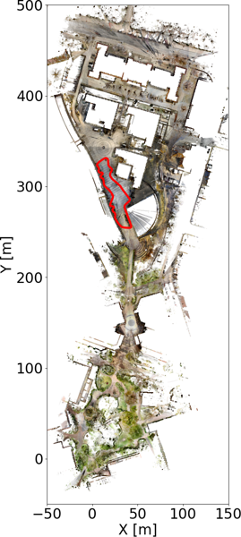

Gallery
This is MRCD.

Ground Truth
Alley
Alley Fast (A I) Â Â Â Â Â Â Â Â Â Â Â Â Â Â Â Â Â Â Â Â Â Â Â Â Â Â Â Â Â Â Â Â Â Â Â Â Â Â Â Â Â Â Â Â Â Â Â Â Â Â Â Â Â Â Â Â Alley Loop (A II)
                 Â

Grove
Grove Clockwise (G I) Â Â Â Â Â Â Â Â Â Â Â Â Â Â Â Â Â Â Â Â Â Â Â Â Â Â Â Â Â Â Â Â Â Â Â Â Â Â Â Â Â Â Â Â Â Grove Counterclockwise (G II)
                 Â
Town
Town Clockwise (T I) Â Â Â Â Â Â Â Â Â Â Â Â Â Â Â Â Â Â Â Â Â Â Â Â Â Â Â Â Â Â Â Â Â Â Â Â Â Â Â Â Â Â Â Â Â Â Town Counterclockwise (T II)
 Â Â Â Â Â Â Â Â Â Â Â Â Â Â Â Â Â Â
                 Â

Town Courtyard (T III) Â Â Â Â Â Â Â Â Â Â Â Â Â Â Â Â Â Â Â Â Â Â Â Â Â Â Â Â Â Â Â Â Â Â Â Â Â Â Â Â Â Â Â Â Town Trees (T IV)
 Â Â Â Â Â Â Â Â Â Â Â Â Â Â Â Â Â Â